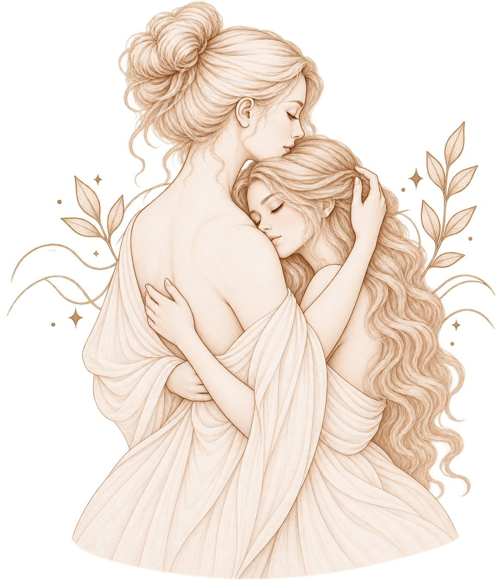
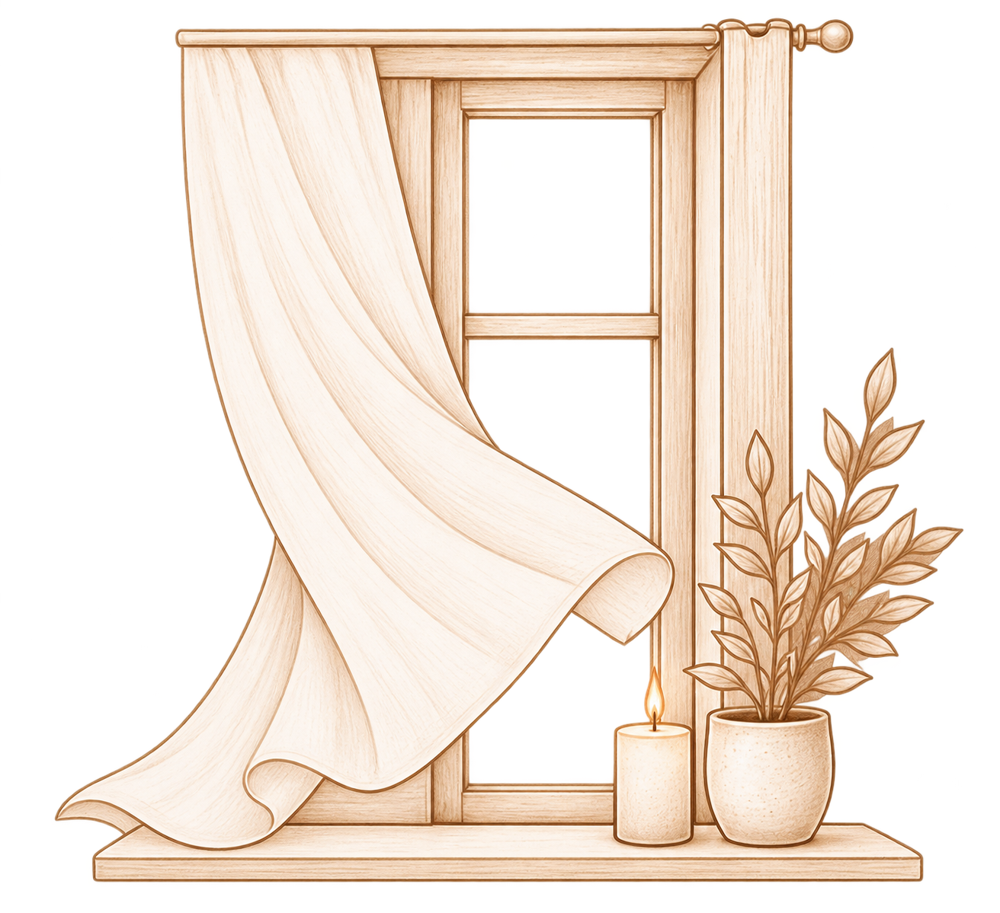
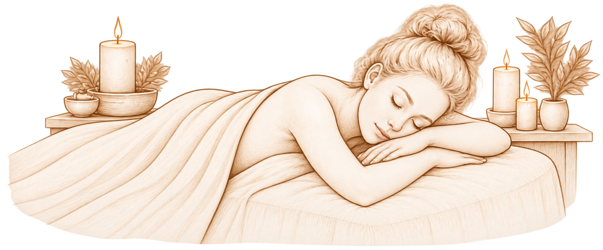

Представьте: у вас был тяжёлый день. Вы устали, раздражены или просто немного не в себе. И вдруг кто-то из близких обнимает вас или ненадолго кладёт руку на плечо.
Иногда от этого действительно становится легче.
Но в другой день то же самое прикосновение может вызвать совсем другую реакцию: хочется отойти, освободиться, остаться одной.
Почему так происходит?
Наверное, потому, что прикосновение — это гораздо больше, чем просто контакт кожи.
«Прикосновение приходит раньше взгляда, раньше речи. Это первый и последний язык — и он всегда говорит правду».
Маргарет Этвуд, «Слепой убийца»
Почему объятие иногда помогает успокоиться?

Прикосновение близкого человека может восприниматься как знак: «Я рядом».
Возможно, поэтому поддерживающий контакт иногда связан у нас с ощущением безопасности и близости. Мы не просто чувствуем давление ладони — мы узнаём ситуацию, человека, отношения между нами.
Но здесь нет универсального механизма, который работает одинаково для всех.
Одному человеку хочется, чтобы его обняли, когда ему трудно. Другому в тот же момент может быть важнее, чтобы его не трогали.
И это не означает, что кто-то из них неправильно реагирует.
Хорошее прикосновение — не обязательно нежное. Оно ещё и желанное.
Мы чувствуем прикосновение не только кожей

Кожа постоянно собирает информацию об окружающем мире. Тепло и холод. Давление и лёгкое касание. Ткань одежды. Ветер.
Но когда нас касается другой человек, происходит что-то сложнее.
Мы чувствуем не только само прикосновение, но и многое вокруг него. Кто к нам прикоснулся? Было ли это неожиданно? Хотели ли мы этого? Что происходит с нами в этот момент?
Одно и то же касание руки может ощущаться совершенно по-разному.
Учёные изучают особые виды тактильных сигналов, в том числе те, которые связаны с медленными, мягкими прикосновениями. Но даже самое приятное с точки зрения физического ощущения касание не существует отдельно от человека и ситуации.
Прикосновение сначала происходит на коже. Но его значение складывается гораздо дальше.
Почему иногда прикосновение раздражает?
Иногда причина очень проста: мы не хотим контакта именно сейчас.
Когда мы устали, напряжены или погружены в свои мысли, неожиданное прикосновение может восприниматься совсем иначе. Даже если его намерение было добрым.
Имеет значение и человек, который нас касается. И место. И обстоятельства.
Есть прикосновения, которых мы ждём. Есть те, которые замечаем с удивлением. А есть такие, после которых хочется сделать шаг назад.
Наше отношение к контакту не высечено в камне. Оно может меняться даже в течение одного дня.
Возможно, утром вам хочется обниматься, а вечером — сидеть рядом с близким человеком, сохраняя между вами несколько сантиметров пространства.
Иногда близость — это прикосновение. А иногда возможность не прикасаться.
А что насчёт массажа?

Массаж — интересный пример, потому что здесь прикосновение происходит в особой обстановке.
Обычно мы заранее знаем, что к нам будут прикасаться. Можем сказать, если давление слишком сильное или что-то неприятно. Сам контекст помогает нам понимать, чего ожидать.
Но и здесь у всех свой опыт.
Одному человеку после массажа хочется спать, другому — разговаривать, а третьему может быть просто некомфортно от чужих прикосновений.
И это тоже часть разговора о теле.
Мы не всегда можем заранее знать, какое прикосновение окажется приятным.
Но можем учиться замечать собственную реакцию — и относиться к ней внимательно.
Возможно, именно с этого и начинается хороший контакт: с возможности почувствовать, что нам сейчас действительно подходит.
Что мы читали, пока писали: научные публикации о тактильном восприятии и социальном прикосновении — PubMed, Frontiers in Psychology и другие научные источники.